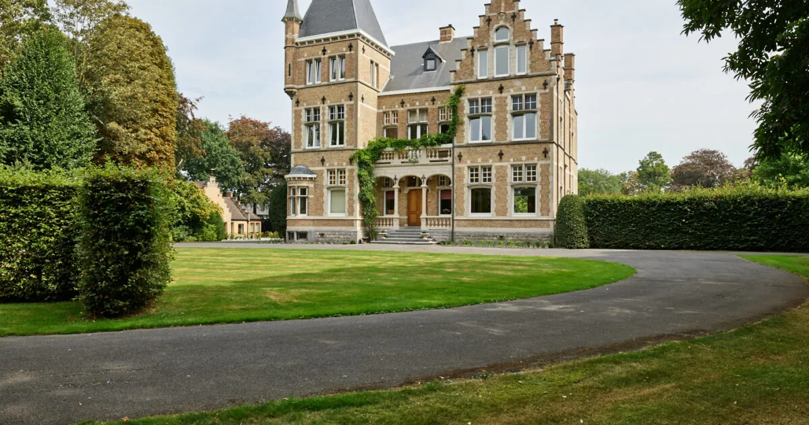
12 KMKasteel Ter Wallen
Izegem · castle on 4 ha
1906 neo-Flemish Renaissance castle by Walter Vercoutere, six rooms, pool & jacuzzi. The only "stay in a castle" pick literally true. From ~€204/night. [7]
One bed walks. Everything else taxis.
The full research treated tasting-menu price, pairing cost, sitting length, dress code and lead time as inputs to every other choice — but none of these were verified directly from the restaurant. Resolve before lodging is booked.
Castor closes Sunday, Monday and Tuesday [1], which collapses a weekend to one option: arrive Saturday, sit the table that evening, depart Sunday after a day-trip. Saturday afternoon has to end early enough to dress and arrive on time; Sunday carries the day-trip because Castor is dark.
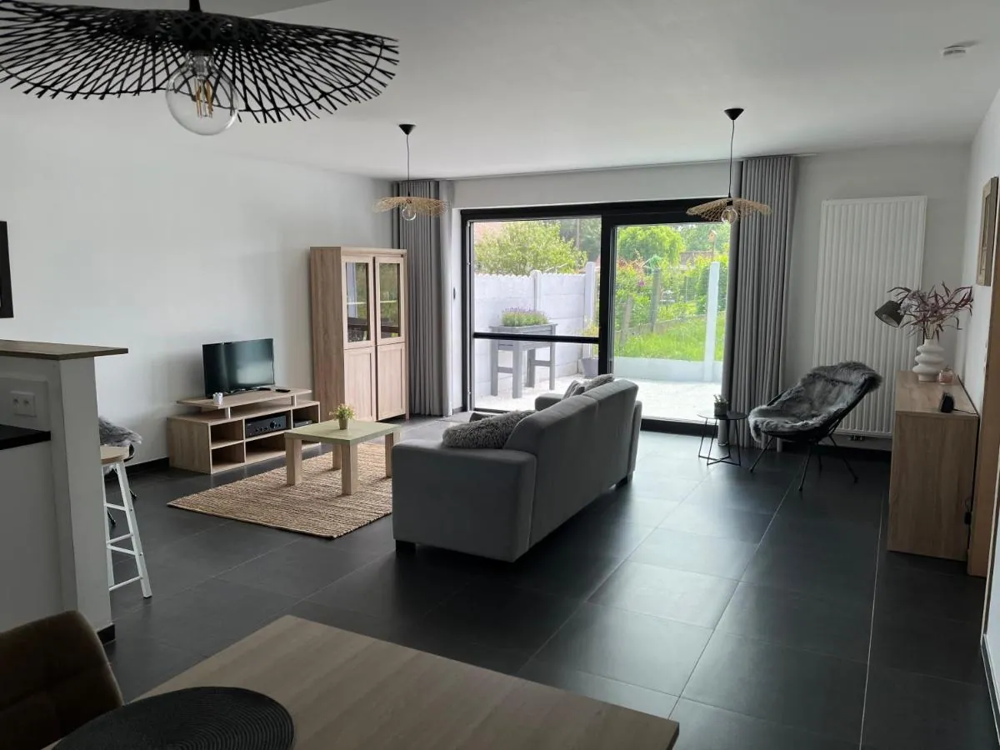
The single ground-floor apartment (90 m², 2 bedrooms, fully-equipped kitchen, no breakfast) sits a flat walk via Liebaardstraat–Schoolstraat–Kortrijkseweg from Castor. From ~€102/night and books out for Castor weekends — reserve as early as you confirm the table. [4]
If a 5-min taxi still honours "no driving" — alternates within range

12 KM1906 neo-Flemish Renaissance castle by Walter Vercoutere, six rooms, pool & jacuzzi. The only "stay in a castle" pick literally true. From ~€204/night. [7]
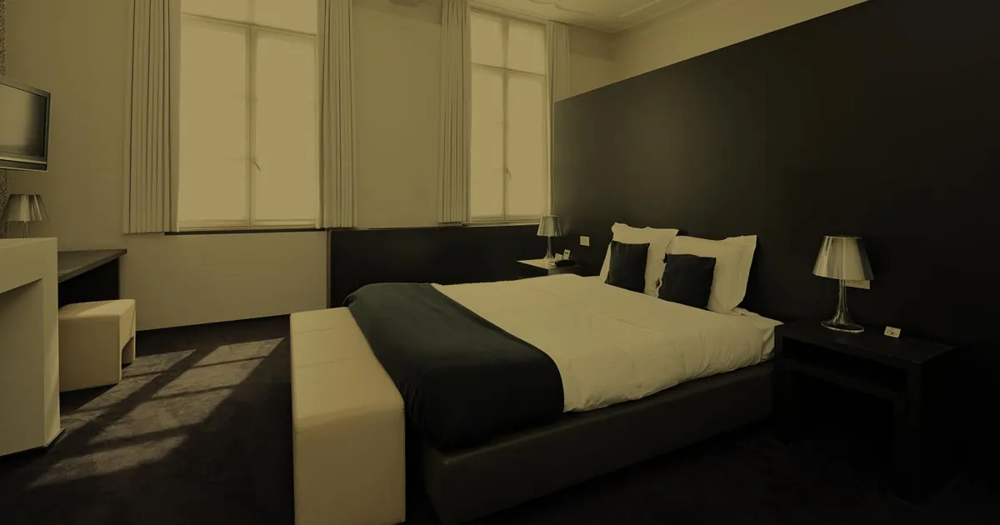
8 KMClassified-monument four-star, 28 rooms with exposed beams and a spiral stone staircase. Walking-base for Sunday in Kortrijk. [8]
Four themed rooms (Gold, Black, Green Garden, Blue Night) inside the listed 'Tack' brewery directly on the Lys. [9]
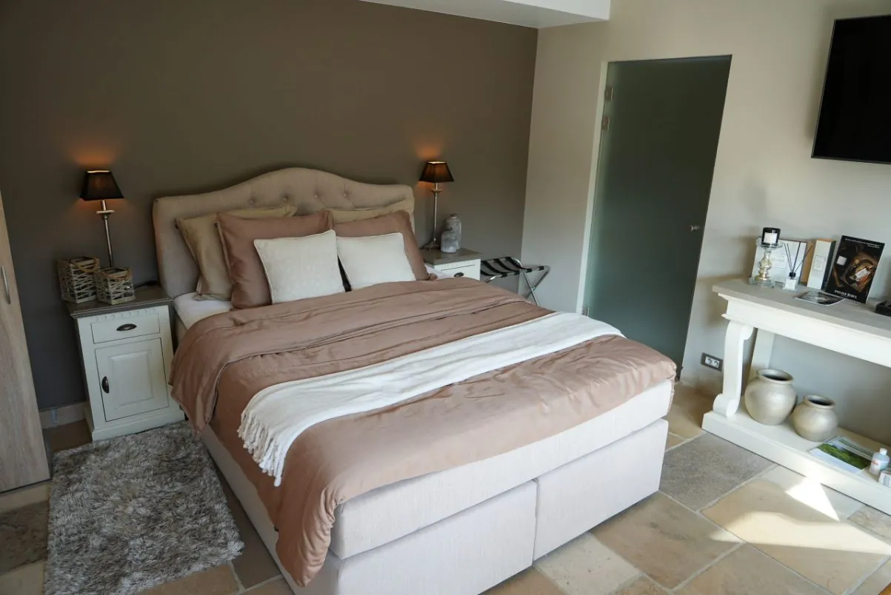
4 KMOutdoor pool, hot tub, blackout curtains. 5/5 on Tripadvisor over 4 reviews. ~€189–197/night. [11]
13th-century beguinage, 41 whitewashed houses, UNESCO-listed since 1998. Free, with experience centre. [19]
Cycling-heritage expo + bike rentals + guided rides onto Koppenberg, Oude Kwaremont, Paterberg. [28]
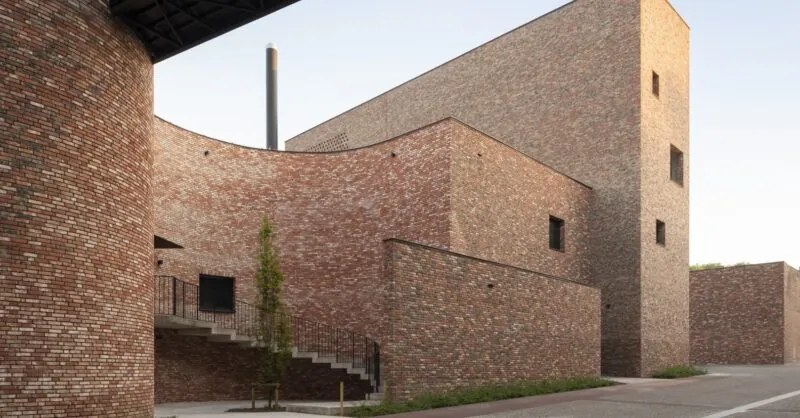
Bellegem · Mon–Sun · €20 · 2 h with tasting + OMER pouring ritual. Book ahead. [34]
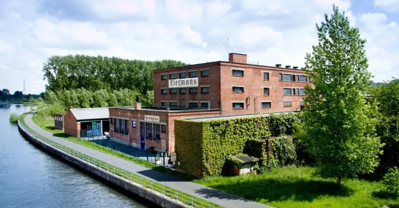
Oudenaarde · 10:00 / 14:00 / 17:00 · €16 · 2 h. Goudenband ages 4–12 months in oak. [33]
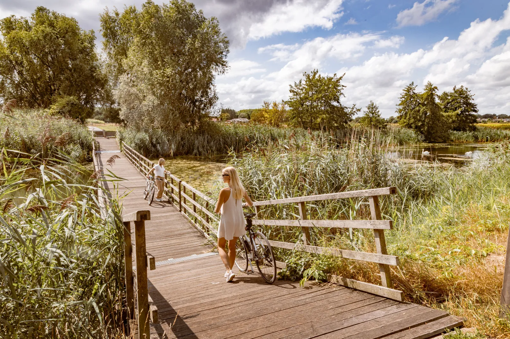
42.2 km signposted loop from Harelbeke through Beveren-Leie's Zavelput. Flat, traffic-free Leie towpath. [39]
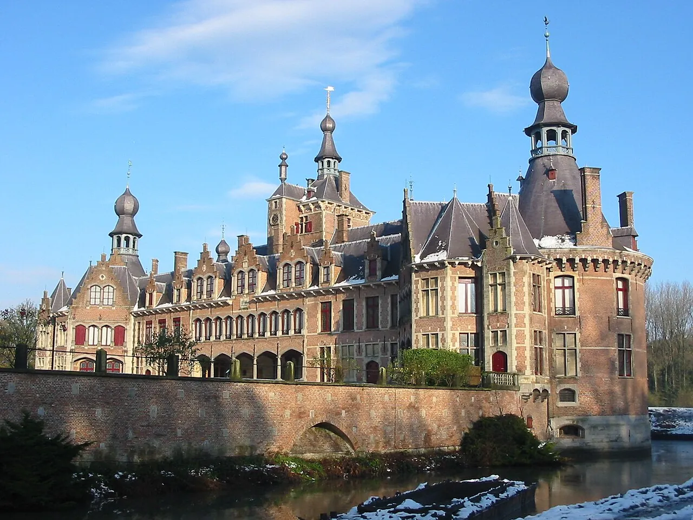
Bachte-Maria-Leerne · Sun + holidays 14:00–17:30, 1 Apr – 1 Nov. Interior €15, gardens €4. [43]
Provincial lake park, swimming zone 9 May – 20 Sep 2026, separated walking/cycling/equestrian paths. [42]
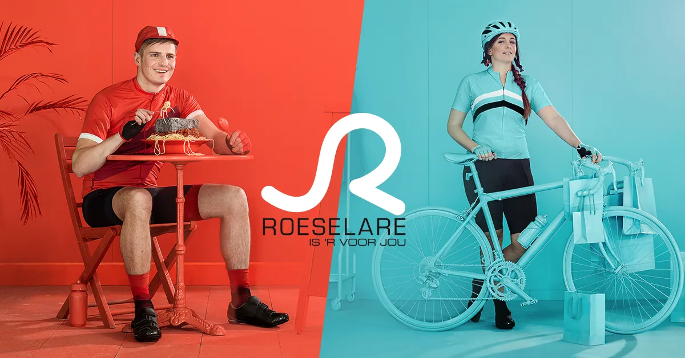
Roeselare · 90° cobblestone wall, vintage bikes, "Worldwide Cycling" temp show till end Sep 2026. €9 adults. [46]
Twin 14th-century towers, landscaped riverbanks, BUBOX contemporary art, Buda Tower viewpoint. [23]
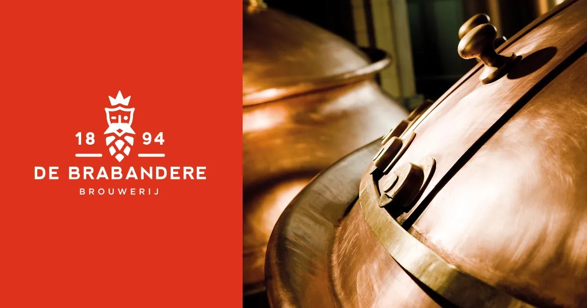
Bavikhove · €12.50 · 90 min · weekdays only, 15-person minimum. Bavik Pils + Petrus Sour foeders. [37]
Battle of the Golden Spurs museum, daily 10:00–17:00, free with reservation. Deken Zegerplein 1. [20]
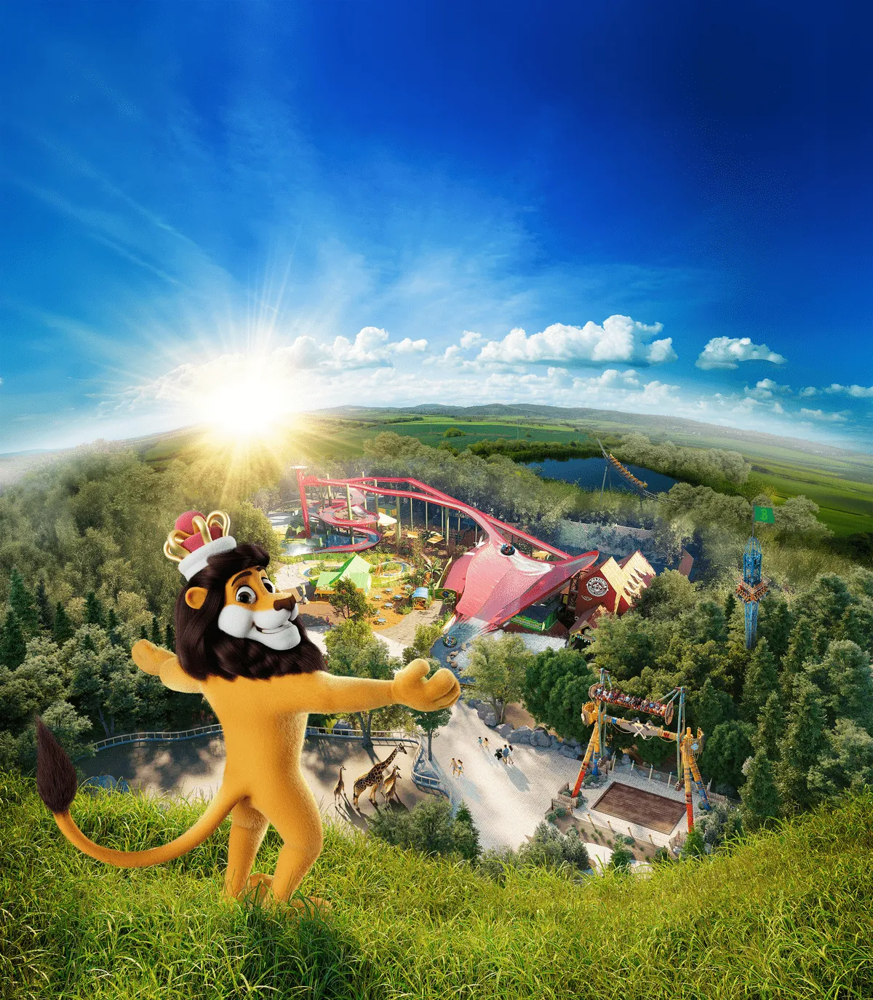
Ieper · 54 ha theme park & zoo, 300 animals. Season opens 4 Apr 2026. €43 high / €35 pre-July. [47]
Four overlapping festivals collapse into one Kortrijk trip and pair naturally with a Castor Saturday at the end. The same lodging plan works.
Otherwise Kortrijk Xpo's 2026 calendar runs Indumation (Feb), Machineering NextGen (Mar), Sustainable Solutions (Sep), ABISS (Oct).